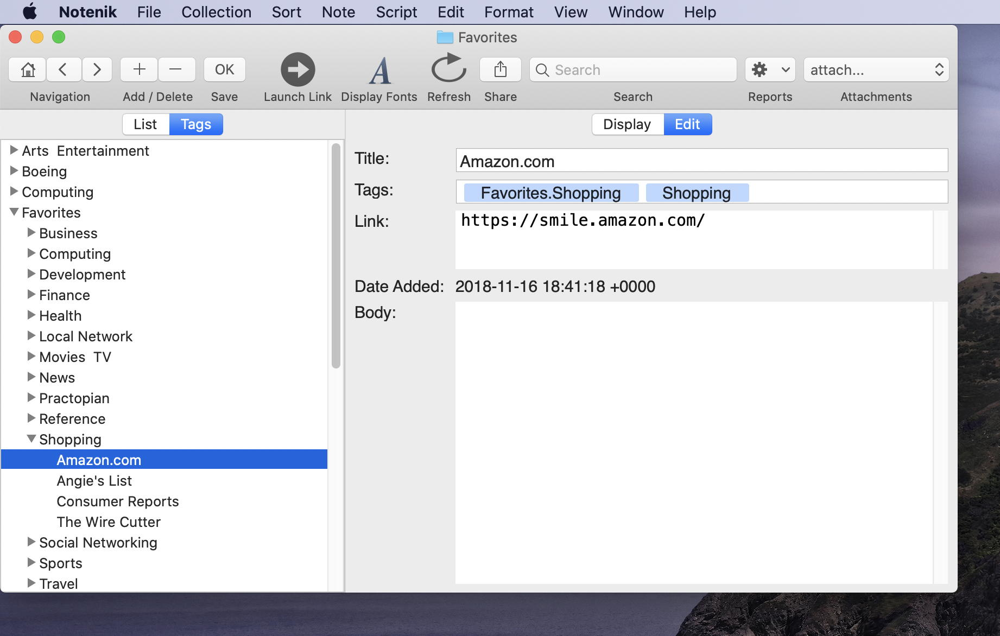
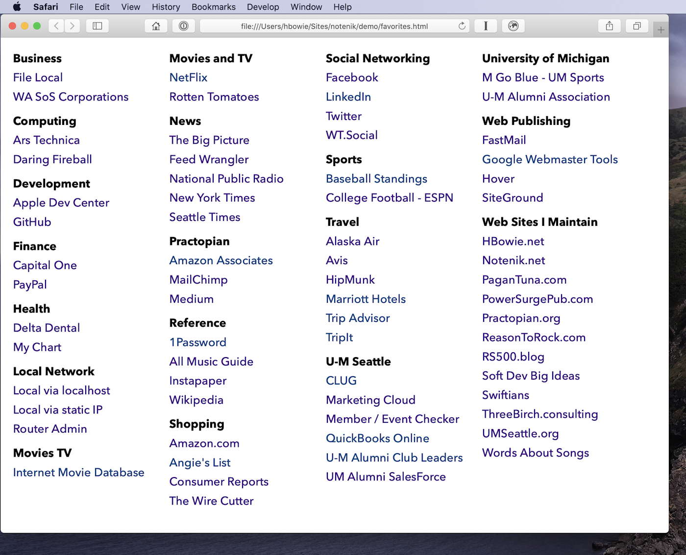

Notenik Project # 2: Create a Collection of Bookmarks
Published 25 Nov 2019
This post is the second in a series designed to gradually explain the use of the Mac App Notenik for increasingly complex and sophisticated tasks.
Before proceeding, you might want to review some of the basics covered in Project # 1, if these aren't already fresh in your mind.
You will need at least Notenik version 2.1.0 to perform all the functions described in this piece.
Motivation
All modern web browsers (Safari, Chrome, Firefox, etc.) have their own capabilities for storing frequently used web links (aka URLs) as a bunch of bookmarks, sometimes referred to as favorites.
However, if you have a tendency to use different browsers for different purposes, or as the mood strikes you, then you might find it convenient to have your favorite web bookmarks stored independently, in a way that can be accessed equally well from any browser.
This is where Notenik comes in.
Step 1: Create a New Collection
Name the folder ‘Favorites’ or ‘Bookmarks’ or something similar. If you have Apache enabled, then you might wish to place it somewhere in your ‘Sites’ folder. (If you have no idea what this means, then don't worry about it.) Another option would be to place the new Collection in your Dropbox folder or iCloud Drive, if you'd like it to be synced to the cloud and/or to other devices. Or just put it somewhere in your Documents folder. It's up to you!
Step 2: Configure with Default Fields
Title, Tags, Link and Body should be fine for our purposes today.
Step 3: Add Your Favorite Websites
For each site, enter the Link field and the Title field. For a title, enter whatever is most meaningful to you – it doesn't have to exactly match any sort of official title on the site itself. If you wish to add some comments about a site in the body of its note, then that's ok too.
Step 4: Use Tags to Categorize the Sites
Here there's something specific you need to enter in order to enable a later step.
Enter your tag in the format ‘Favorites.xxx’ where ‘xxx’ is the category you wish to assign to the note. The first part of the tag must be ‘favorites’, although the case (upper or lower) is not significant.
If you have a lot of bookmarks you wish to track in Notenik, then they don't all need to have the ‘Favorites’ tag. In fact, a maximum of about 60 is recommended. And all of your tags, including the ones tagged as a ‘favorite’, can have multiple tags.
With or without the favorites tag, note that you can use the ‘Tags’ tab to view your growing list of bookmarks in outline form, with the tags used to organize the outline. When a note has multiple tags, it will appear multiple times, so that it can show up under each different tag.

Step 5: Launch Links from within Notenik
Once you have your bookmarks entered into Notenik, you can always open that collection, select the bookmark you are interested in, and then launch the link, either via the Toolbar command, or via the command beneath the Note menu, or by using the CMD-L keyboard shortcut. Launching the Link via any of these methods will result in the page opening in your default web browser (Safari, Chrome, etc.)
But wait, there's more!
Step 6: Save your Favorites to HTML
Beneath the File menu, there is an option to save your Favorites to HTML. Once you select this command, you'll be prompted to specify a file name and location. Once you've completed this, Notenik will generate a web page for you, containing all of the bookmarks you have tagged as Favorites, grouped neatly into the categories you have specified.
After saving this web page for you, Notenik will ask that it be opened by your default web browser. Once this happens, if you look at the URL for the page, you'll see the location you specified expressed as a local file URL, starting with the ‘file://’ protocol.

Step 7: Adjust Settings
The defaults are to arrange your favorite links into 4 columns, with each column a maximum of 32 lines long, and taking up a screen width of 250 pixels. I've found that these defaults work well for me but, if you'd like to adjust them, you can use the Favorites tab within Notenik's application Preferences to bump them up or down, to suit your tastes (and screen real estate).
The other settings you might want to adjust are your Display Fonts. You can get to these by clicking on the appropriately named button on your toolbar, or by selecting Display Appearance beneath the Format menu. You can then change the Display font and the display size. These settings will primarily affect the appearance of your Notes on the Display tab (for all of your collections – these settings are not collection-specific), but these same values will also be used for the webpage generated when you select Favorites to HTML beneath the File menu.
After making changes to any of these settings, you will need to repeat Step 6, overwriting the file you created previously, in order to see the effects of your changes.
Step 8: Set As Your Browser Home Page
Once you have the generated HTML looking the way you would like, you will want to select the generated page's URL from your browser and copy it.
Now go into the Preferences for each web browser that you use, and paste this local file address into the field identifying your homepage, or your home button. You might also want to specify that new browser windows and/or tabs will open to your homepage.
That's it! Now whenever you open your web browser, you'll see a nice clean page showing all of your favorite websites, without any advertising or tracking or animation or javascript or cookies or download delays. Just click on any of the titles to be taken to the corresponding website. And sites will be named and categorized and located in a way that makes sense to you, making it easy for you to find the site you are looking for and open it.
When you want to add, remove or change the contents of this page, then all you have to do is re-open your Notenik collection of favorites, make the desired changes there, then repeat step # 6, making sure to overwrite the file you created before, by specifying the same location and file name. From that point on, the new page will appear in all of the browsers you have set to this homepage (understanding that you may sometimes have to ask the browser to reload the page, to replace any cached copies it might be holding on to).
Wrapping Up
And that's it for Project # 2! As always, feel free to send any questions or comments to hbowie@notenik.net. Looking forward to hearing from you!